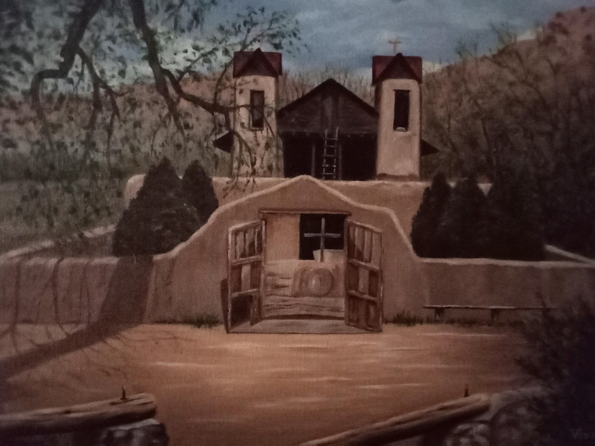
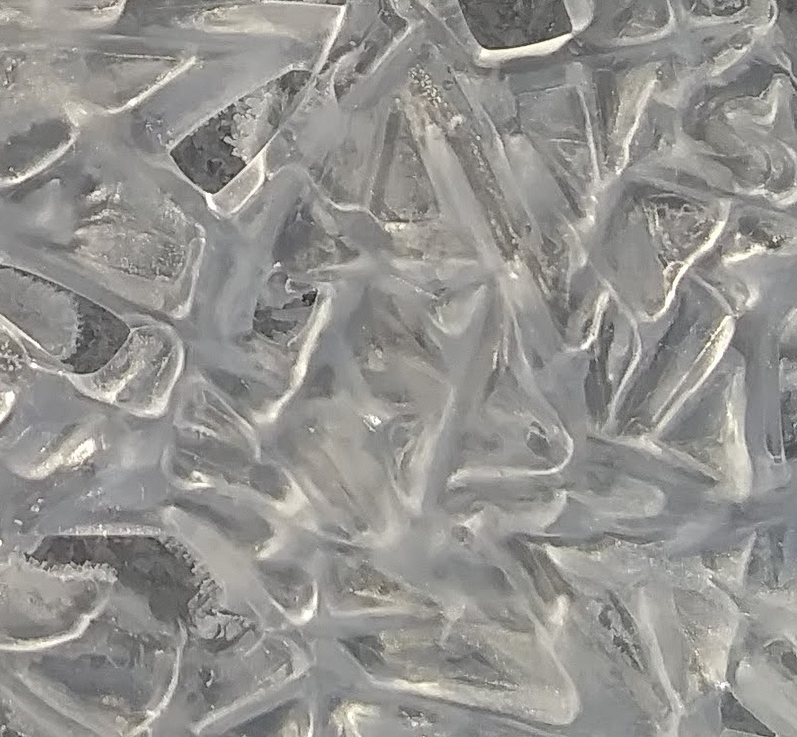
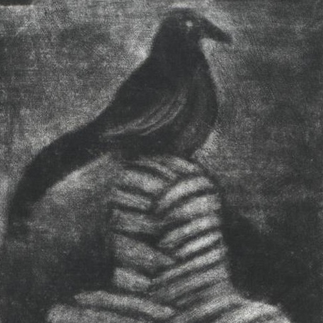
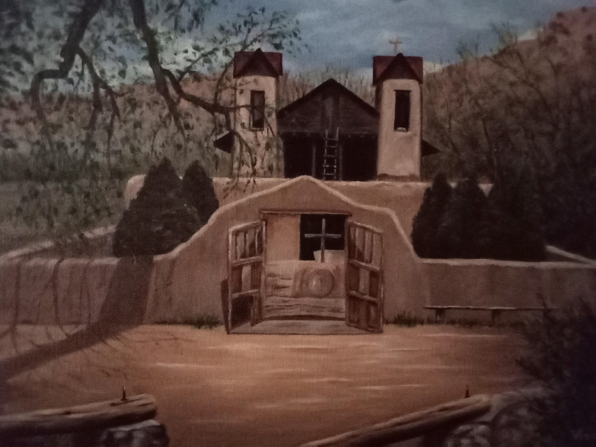
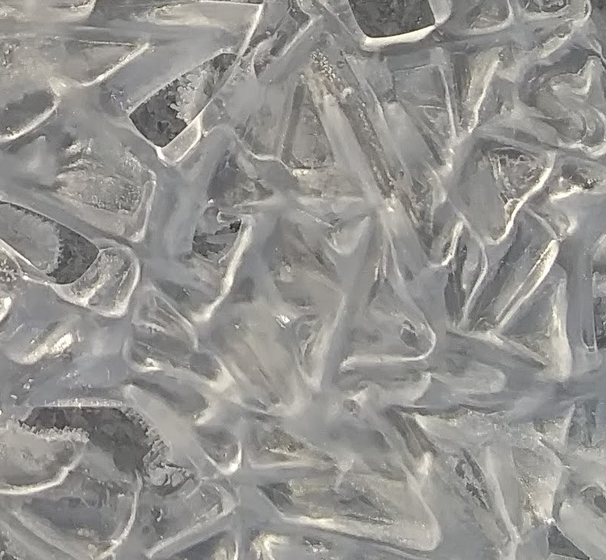
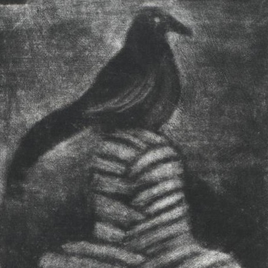
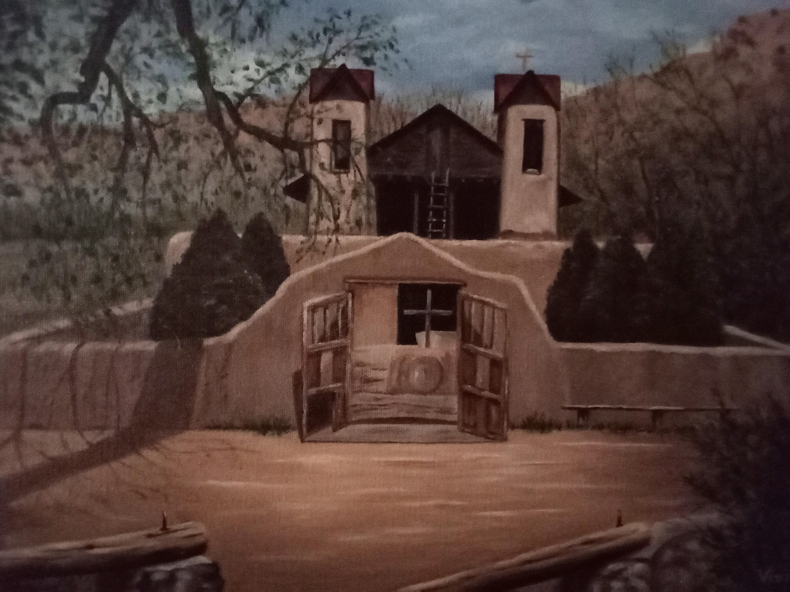
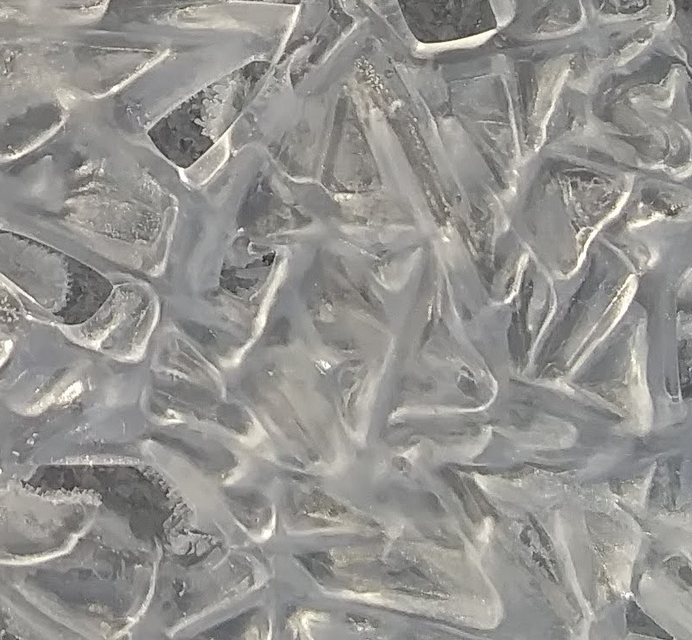
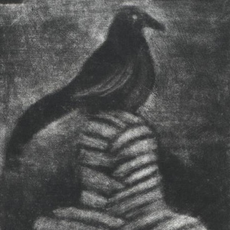

Select (or upload) an image before beginning. See explanation below for options.



To start, select an image to use as a base image for generating pictures.
Next Seed:
The mapping from the canvas to the base image used to select colors is determined by a unique number or seed. This
unique number is usually determined randomly, but you can type one in here if you have already determined a mapping you like. Either way, click the button class='option' to generate an image.
Last Seed:
This is the seed that was last used to generate an image. Sometimes, you may want to generate an image using the same
seed or color mapping after you have changed other options. Use this button class='option' for that.
This option will copy one triangle of the generated image 8 times to create a highly symmetric image. Sometimes, this is
a good way to turn a meh image into a decent image. Other times, it is simply too cliche.
The standard algorithm does not recognize the edges of the canvas, and a pattern can extend off the canvas. This option
will cause the image to bend away from the edges without an apparent clipping effect. A value of 2 will isolate the image
to a circle. Higher values will make the image area closer to a square.
Sometimes, it may seem like the algorithm is stuck in an unimpressive groove. This is merely psychological, but
if it makes you feel better, you can click this button class='option' to restart the randomization process.
 




